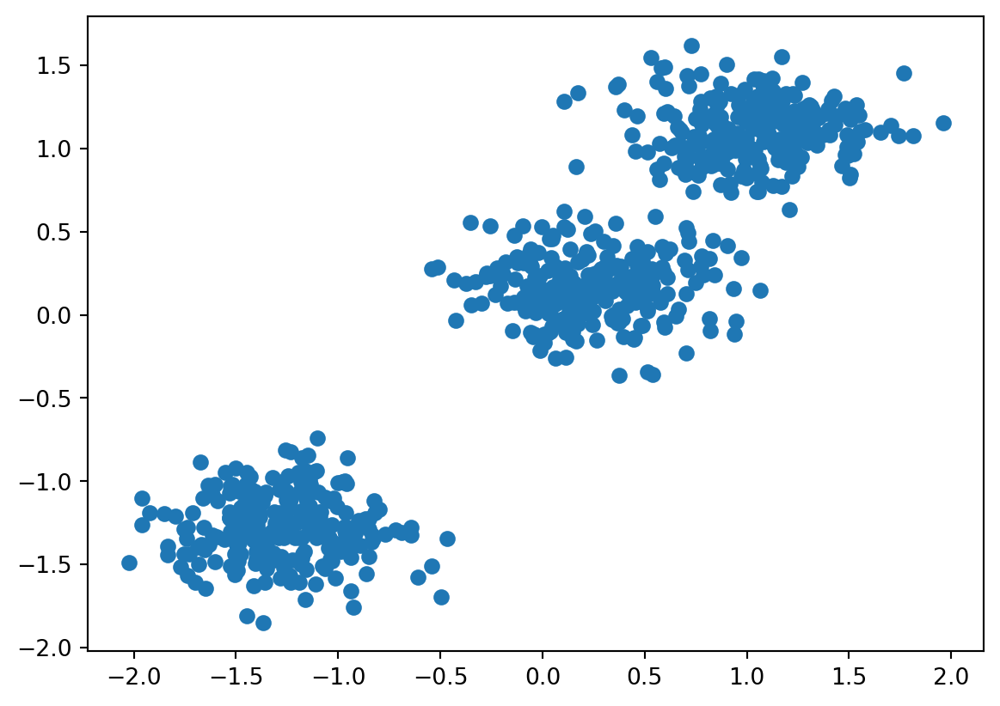

Unveiling the Power of Clustering in Machine Learning
machine learning
Author
Riley Rudd
Published
November 15, 2023
Clustering is a type of unsupervised learning method, meaning conclusions are drawn about datasets without labeled responses. It is the unsupervised version of classification. It is done by grouping a particular set of objects based on their characteristics, aggregating them by their similarities. Clustering is generally used to find meaningful structure, underlying processes, and grouping inherent in a set of examples. Clustering can be thought of like organizing music by genre, something we all do naturally. Consider the example of going a bit further, such as organizing EDM music by type and considering how different countries have influenced each sub-genre. By using clustering, you’ve learned something about your data.
Why Use Clustering?
Real world examples are very complex and can be difficult to categorize. When you need to answer questions about this data, it is necessary to understand patterns within your data. Clustering can be useful in many industries. A few common examples include: anomaly detection, medical imaging, and market segmentation. Consider the example of using clustering for data compression. Replacing feature data for cluster ID will simplify the dataset and saves storage – which is a significant benefit when considering large datasets. This allows for faster and simpler training of machine learning models.
How is Clustering Achieved?
To start, features in the dataset must all be numerically represented. If one of your features includes a “review” such as with ecommerce sites, you would need to define that review numerically, such as representing positive reviews with 0s and negative reviews with 1s. The first step is to find datapoints with similar features. Measuring similarity can be done by combining the data points’ feature data into a metric called similarity measure. After clustering, each cluster receives a number called a cluster ID. Once the clusters are defined on a plane with however many axes as you have features, the distance between two points represents their similarity. One goal of clustering is to minimize inter-cluster similarity. This means that points in two different clusters should be as far apart (eg. different) as possible.
Clustering Methods
Density-Based methods: these methods consider the clusters as the dense region having some similarities and differences from lower dense region of the space. They have good accuracy and ability to merge clusters. One example is the Density-Based Spatial Clustering of Applications with Noise (DBScan). It is effective in identifying clusters of various shapes and sizes.
K-Means Clustering: this is one of the most popular clustering algorithms. It partitions the dataset into “k” clusters based on the mean values of data points. It iteratively assigns data points to clusters and recalculates the cluster until it converges.
Mean Shift: this is a non-parametric clustering algorithm that identifies dense regions in the data distribution. It iteratively shifts the center of cluster towards the modes of the data distribution.
Gaussian Mixture Models (GMM): These algorithms assumes the data is generated from a mixture of several Gaussian distributions, and models each cluster as a Gaussian distribution, assigning probabilities to data points belonging to each cluster.
Challenges with Clustering
Choosing the Right Number of Clusters: selecting the appropriate number of clusters can be challenging and considerably impact the results. There are analysis methods to help determine the optimal “k” clusters.
Sensitivity to Initial Conditions: some algorithms are sensitive to initial placement of centroids, requiring multiple initializations to obtain stable results.
Handling High-Dimensional Data: clustering high dimensional data can be complex, requiring dimensionality reduction techniques to improve the algorithm’s performance.
Deeper Dive into Clustering
from sklearn.cluster import DBSCANimport matplotlib.pyplot as pltimport numpy as npnp.random.seed(0)data = np.random.rand(100, 2) # 100 points in 2D space# Apply DBSCANdbscan = DBSCAN(eps=0.3, min_samples=5)labels = dbscan.fit_predict(data)# Visualize the clustersplt.scatter(data[:, 0], data[:, 1], c=labels, cmap='viridis', marker='o', s=50, edgecolors='k')plt.title('DBSCAN Clustering of Geographical Music Preferences')plt.xlabel('Latitude')plt.ylabel('Longitude')plt.show()

In this example, the dataset is hypothetically assumed to be about geographical music preferences. If it were a real data set, it may have been geographical locations with other features such as tempo, energy level, and beat pattern. DBSCAN identifies clusters of data points that are dense and well connected. The parameters for DBSCAN are “eps” which defines the maximum distance between samples to be considered near another, and “min_samples” which sets the number of samples in a neighborhood for a data point to be considered a core point. Next, DBSCAN will begin with an arbitrary point and expand the cluster by adding nearby points if they are densely packed. It will continue until no more points can be added, therefore having formed the cluster. After this, DBSCAN assigns the cluster label to each point. Those outside of any cluster are labeled as noise or outliers.